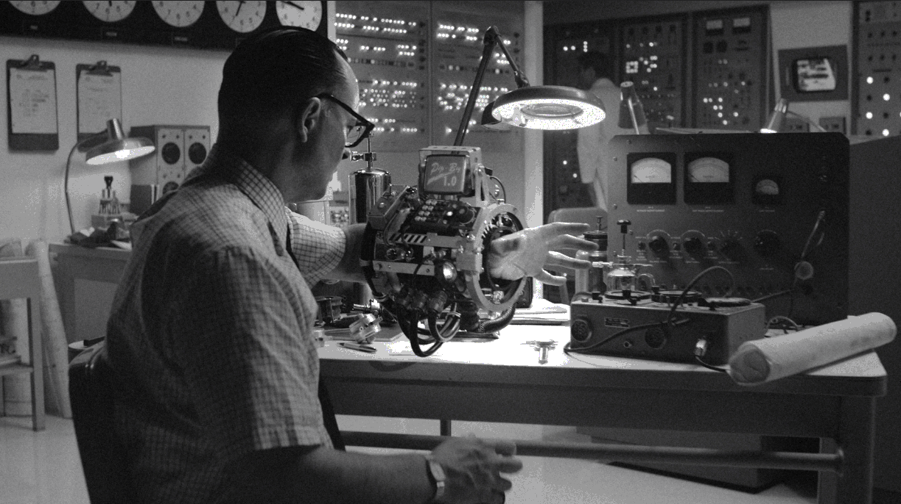

Histoire
Bienvenue dans la partie dédiée à l'histoire du Pip-boy !
Version 1
Le Pip-Boy 1.0 était le premier modèle opérationnel d'assistant d'informations personnelles. Il affichait des informations sur un écran monochrome, mais on ne sait pas quelles fonctions il était capable d'exécuter. Bien que conçu pour être porté sur le bras, il manquait d'un boîtier extérieur pour protéger ses composants et était nettement plus volumineux que les modèles Pip-Boy ultérieurs.
Pip-boy 2000
Le Pip-Boy 2000 affichait les informations sur un écran monochrome noir de 5" x 3". Il permettait d'enregistrer des séquences audio et vidéo pour une lecture ultérieure. En utilisant une forme simple mais élégante de sonar et de suivi par satellite (le cas échéant), ce modèle pouvait cartographier les zones où son utilisateur se déplace. Bien que la saisie était lente, un utilisateur pouvait également saisir et modifier manuellement des messages texte sur son Pip-Boy 2000s. Le Pip-Boy 2000 était porté au poignet de l'utilisateur et appartenait, entre autres, au Vault Dweller et au Chosen One. Un modèle modifié a été utilisé par la Confrérie orientale de l'acier.
Pip-boy 2000 Mark VI
Une version de développement du Pip-Boy 2000, montée sur l'avant-bras et représentant un pas en avant dans le développement de versions plus ergonomiques du produit phare de RobCo. Le Mark VI a été donné aux résidents de l'Abri 76 qui repeupleraient les Appalaches 25 ans après la Grande Guerre. Contrairement aux versions précédentes du Pip-Boy 2000, le VI Mark était dépourvu de fonctions de cartographie en temps réel. Cependant, cela compense le manque de cartographie avec des fonctionnalités qui seraient communes dans les futurs modèles Pip-Boy comme le suivi de l'état des utilisateurs, une radio, un compteur Geiger, une boussole pouvant afficher des emplacements notables et des personnes et créatures à proximité, une fonctionnalité d'éclairage pour les zones sombres, et gestion de l'inventaire. Comme le 3000 Mark IV, le 2000 Mark VI était capable de lire des holotapes de jeux vidéo.
Pip-boy 3000
Le modèle 3000, comme le modèle 2000, affichait ses informations sur un écran noir et monochrome. Comme le modèle 2000, il était capable de garder un œil sur l'état de santé des utilisateurs, de cartographier les zones et de prendre et de stocker des notes. Contrairement à son prédécesseur, il était également doté de fonctionnalités supplémentaires, telles qu'une radio intégrée, un compteur Geiger et une lampe Pip-Boy, utilisées pour éclairer les zones sombres. Il existe plusieurs modèles de Pip-Boy 3000 désignés par lettre, c'est-à-dire Pip-Boy 3000A. qui gardent une apparence similaire mais contiennent du matériel différent. La principale différence par rapport au modèle 2000 est qu'il doit être porté comme un gant, qui scelle avec un verrou biométrique le 3000A est verrouillé avec des boulons et peut être retiré, remplacé ou temporairement déplacé pour permettre aux vêtements de passer sous lui.
Pip-boy 3000 Mark IV
Le Pip-Boy 3000 Mark IV a été distribué aux abris près de Boston, y compris Vault 75, Vault 81, Vault 95, Vault 111 et Vault 114. Le personnel de Vault-Tec n'a pas accordé de Pip-Boy aux résidents de Vault 111 en raison de leur placement en stase cryogénique; le seul survivant de l'abri a pu récupérer un Pip-Boy sur le cadavre d'un scientifique de Vault-Tec mort depuis longtemps.